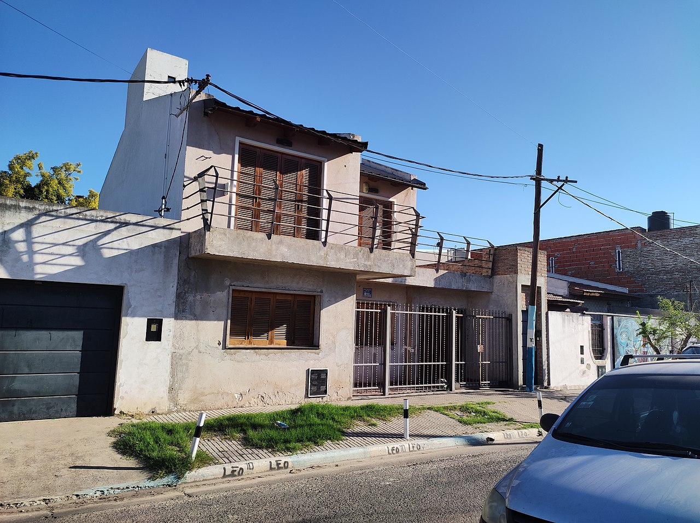
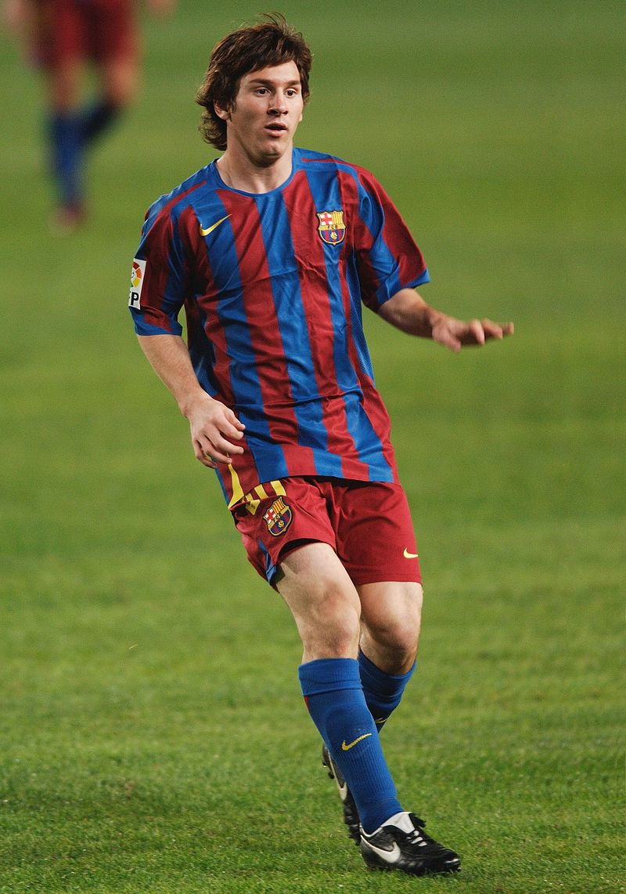
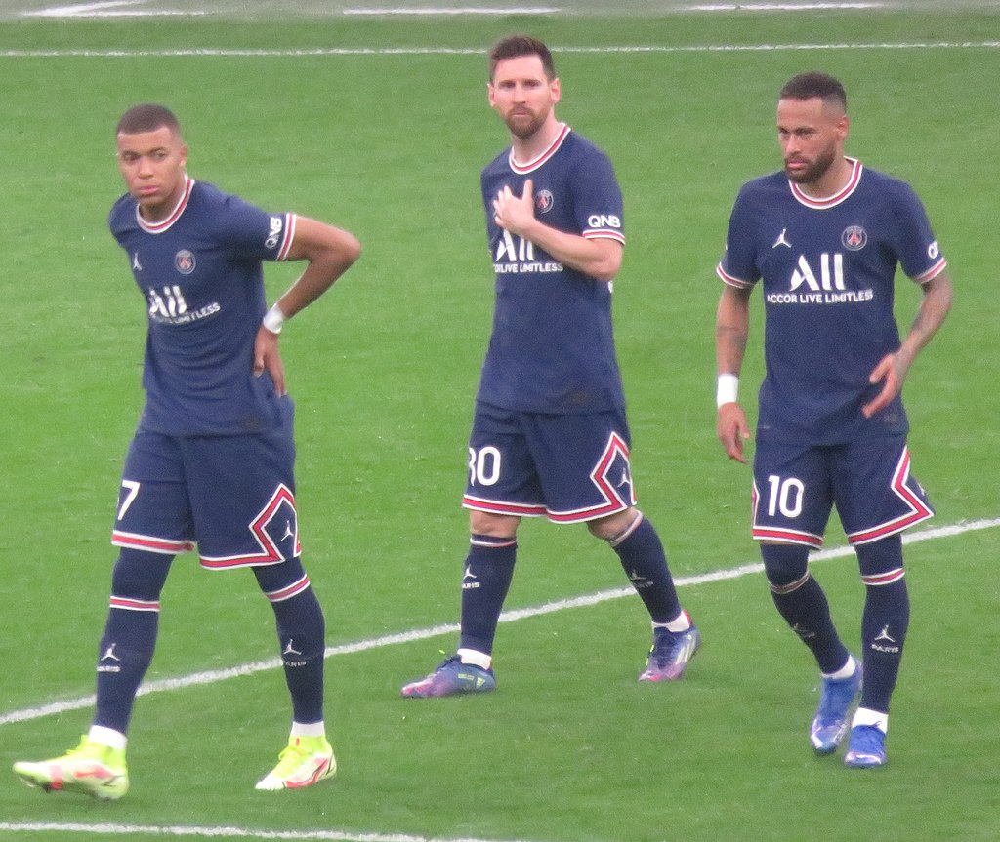
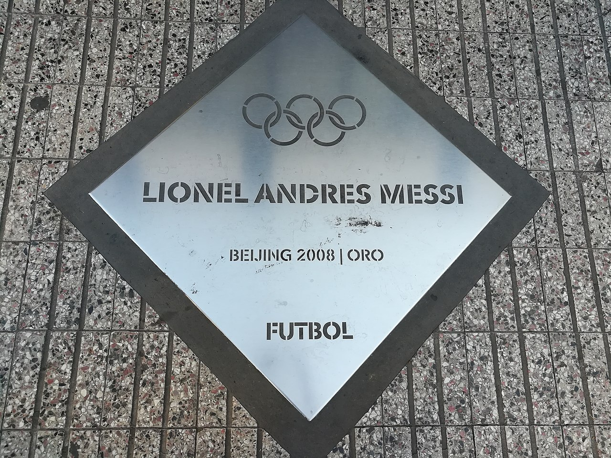
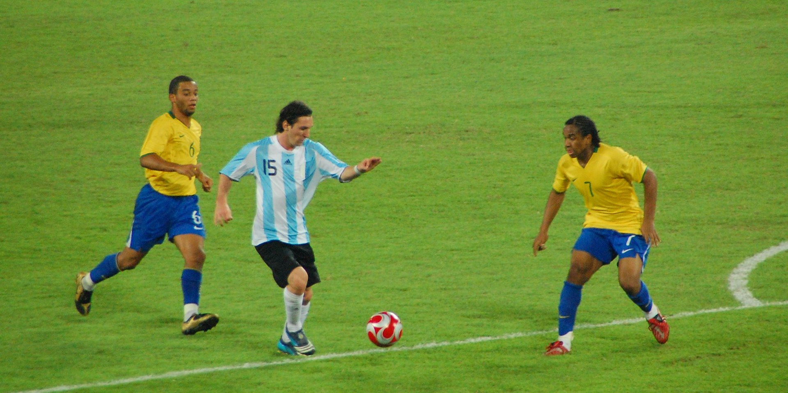
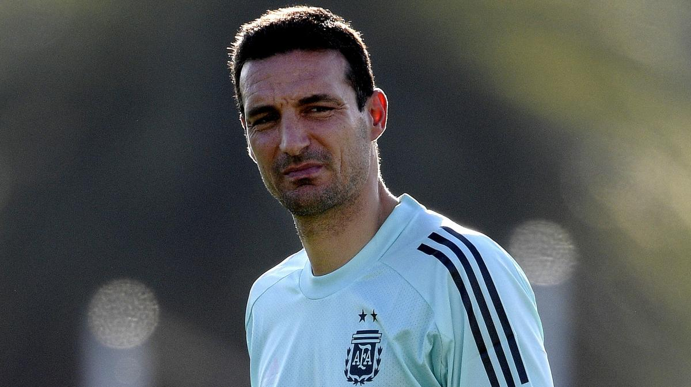

Lionel Messi

Lionel Andrés Messi Cuccittini (Rosario, 24 de junio de 1987), conocido como Leo Messi, es un futbolista argentino que juega como delantero o centrocampista. Jugador histórico del Fútbol Club Barcelona, al que estuvo ligado veinte años, desde 2021 integra el plantel del Paris Saint-Germain de la Ligue 1 de Francia. Es también internacional con la selección de Argentina, equipo del que es capitán.
Considerado con frecuencia el mejor jugador del mundo y uno de los mejores de todos los tiempos, es el único futbolista en la historia que ha ganado, entre otras distinciones, siete veces el Balón de Oro, seis premios de la FIFA al mejor jugador del mundo y seis Botas de Oro. En 2020, se convirtió en el primer futbolista y el primer argentino en recibir un premio Laureus, además de ser incluido en el Dream Team del Balón de Oro.
Con el Barcelona ha ganado 35 títulos, entre ellos, diez de La Liga, cuatro de la Liga de Campeones de la UEFA y siete de la Copa del Rey.
Goleador prolífico, ostenta, entre otros, los récords por más goles en una temporada, en un mismo club y en un año calendario: en 2012, superó la marca de Gerd Müller e ingresó en el Guinness World Records. Es, además, el máximo goleador histórico del Barcelona y de la selección argentina, de La Liga, la Supercopa de España, la Supercopa de Europa y el jugador no europeo con más goles en la Liga de Campeones de la UEFA.
Nacido y criado en la ciudad de Rosario, a los 13 años se radicó en España, donde el Barcelona accedió a pagar el tratamiento de la enfermedad hormonal que le habían diagnosticado de niño. Después de una rápida progresión a través de la Academia juvenil del Barcelona, hizo su debut oficial con el primer equipo en octubre de 2004, a los diecisiete años. A pesar de ser propenso a lesiones en los inicios de su carrera, ya en 2006 se estableció como jugador fundamental para el club. Su primera campaña ininterrumpida fue la temporada 2008-09, en la que el Barcelona alcanzó el primer triplete del fútbol español.
En 2009, a los veintidós años, ganó su primer Balón de Oro y el premio al Jugador Mundial de la FIFA del año. Siguieron tres temporadas exitosas, en las que ganó cuatro Balones de Oro de forma consecutiva, hecho que no tenía precedentes. Hasta el momento, su mejor campaña personal es la temporada 2011-12, en la que estableció el récord de más goles en una temporada, tanto en La Liga como en otras competiciones europeas.
Durante las dos siguientes temporadas, también sufrió lesiones y, en 2014, perdió el Balón de Oro frente a Cristiano Ronaldo, a quien se considera su rival. Recuperó su mejor forma durante la campaña 2014-15, en la que superó los registros de máximo goleador absoluto en La Liga y la Liga de Campeones y logró con el Barcelona un histórico segundo triplete, además de ganar su quinto Balón de Oro. Volvería a ganarlo por sexta y séptima vez en 2019 y 2021.
Como internacional argentino, Messi ha representado a su país en diez torneos mayores. A nivel juvenil, ganó junto con la selección sub-20 la Copa Mundial de Fútbol Sub-20 de 2005, torneo en el que finalizó como mejor jugador y máximo goleador, y una medalla de oro en los Juegos Olímpicos de 2008, con la sub-23. Por su estilo de juego de pequeño driblador zurdo, se lo comparó con su compatriota Diego Maradona quien, en 2007, declaró al adolescente su «sucesor». Después de debutar en la selección mayor en agosto de 2005, en el Mundial de Alemania 2006 se convirtió en el argentino más joven en jugar y en marcar en un mundial. Al año siguiente, en la Copa América, fue nombrado mejor jugador joven del torneo. Como capitán desde agosto de 2011, llegó con su equipo a las finales del Mundial de Brasil 2014, de la Copa América 2015 (certámenes en los que fue elegido mejor jugador del torneo) y de la Copa América Centenario, además de ganar la Copa América 2021 ante Brasil en el Maracaná y la Finalissima ante Italia en Wembley en 2022.
Origenes y Formacion

Lionel Andrés Messi nació el 24 de junio de 1987 en el Hospital Italiano Garibaldi de la ciudad de Rosario, en la provincia de Santa Fe. Es el tercer hijo de Jorge Horacio Messi y Celia María Cuccittini. Tiene dos hermanos mayores, Rodrigo y Matías, y una hermana menor, María Sol. Su familia paterna es originaria del municipio italiano de Recanati, de donde su bisabuelo, Angelo Messi, emigró a Argentina en 1883. Fue su abuela materna, Celia, la que lo alentó a dedicarse al fútbol y a quien él agradece tras convertir un gol, señalando al cielo con las dos manos. Dos de sus primos (Maximiliano y Emanuel Biancucchi) son también futbolistas. Estudió en la escuela primaria N° 66 "Gral. Las Heras".
Con apenas cuatro años, comenzó a practicar fútbol en el club Abanderado Grandoli, ubicado al sur de Rosario, en el barrio Grandoli, a pocas cuadras de su casa. Su primer entrenador fue Salvador Aparicio. En 1994, comenzó a entrenarse en las divisiones inferiores de Newell's Old Boys. A la edad de ocho años, le fue diagnosticada una deficiencia de la hormona de crecimiento. Durante un año y medio, el tratamiento, de 900 dólares mensuales, lo cubrieron su obra social y Acindar, siderúrgica en la que trabajaba su padre.
En 1995, jugó un torneo no oficial con Central Córdoba.
En 1999, el equipo italiano Como tuvo la oportunidad de ficharlo, pero finalmente no lo hizo por las dificultades que presentaba la mudanza de la familia. Al año siguiente, tras haber sido reclutado por Federico Vairo en Rosario, Messi fue a Buenos Aires a probarse a River Plate. Eduardo Abrahamian, encargado de las divisiones infantiles del club, pidió su contratación, pero esta nunca se concretó.Lionel Andrés Messi nació el 24 de junio de 1987 en el Hospital Italiano Garibaldi de la ciudad de Rosario, en la provincia de Santa Fe. Es el tercer hijo de Jorge Horacio Messi y Celia María Cuccittini. Tiene dos hermanos mayores, Rodrigo y Matías, y una hermana menor, María Sol. Su familia paterna es originaria del municipio italiano de Recanati, de donde su bisabuelo, Angelo Messi, emigró a Argentina en 1883. Fue su abuela materna, Celia, la que lo alentó a dedicarse al fútbol y a quien él agradece tras convertir un gol, señalando al cielo con las dos manos. Dos de sus primos (Maximiliano y Emanuel Biancucchi) son también futbolistas. Estudió en la escuela primaria N° 66 "Gral. Las Heras".
Con apenas cuatro años, comenzó a practicar fútbol en el club Abanderado Grandoli, ubicado al sur de Rosario, en el barrio Grandoli, a pocas cuadras de su casa. Su primer entrenador fue Salvador Aparicio. En 1994, comenzó a entrenarse en las divisiones inferiores de Newell's Old Boys. A la edad de ocho años, le fue diagnosticada una deficiencia de la hormona de crecimiento. Durante un año y medio, el tratamiento, de 900 dólares mensuales, lo cubrieron su obra social y Acindar, siderúrgica en la que trabajaba su padre.
En 1995, jugó un torneo no oficial con Central Córdoba.
En 1999, el equipo italiano Como tuvo la oportunidad de ficharlo, pero finalmente no lo hizo por las dificultades que presentaba la mudanza de la familia. Al año siguiente, tras haber sido reclutado por Federico Vairo en Rosario, Messi fue a Buenos Aires a probarse a River Plate. Eduardo Abrahamian, encargado de las divisiones infantiles del club, pidió su contratación, pero esta nunca se concretó.
El 3 de septiembre, con trece años, dio su primera entrevista a un medio de comunicación en el suplemento "Pasión Rojinegra" del diario La Capital de Rosario.
Dos ojeadores de Buenos Aires, enterados del paso de Messi por River, se pusieron en contacto con su socio en Barcelona, Horacio Gaggioli, quien a su vez se comunicó con el agente Josep María Minguella. Minguella decidió llamar a Carles Rexach para pedirle que probaran al jugador.
El 17 de septiembre de 2000, procedente de Buenos Aires con escala en Madrid, Messi llegó con su padre a El Prat, el aeropuerto de Barcelona, donde los esperaba Gaggioli para llevarlos al hotel, justo delante del Camp Nou. Joaquín Rifé, entrenador de juveniles, lo citó para un entrenamiento con niños de su categoría, entre los que estaban Cesc Fábregas y Gerard Piqué. En uno de esos entrenamientos, que se prolongaron dos semanas, marcó seis goles y, según Joan Lacueva, ejecutivo responsable del fútbol base del club, "a la media parte tuvieron que cambiarle de equipo para equilibrar el amistoso". Sin embargo, el club seguía sin contratarlo, porque esperaban el regreso de Rexach, que había ido a los Juegos Olímpicos de Sídney. Finalmente, se organizó una prueba el 2 de octubre en el campo 3, a la vuelta de Rexach,24 que vio jugar a Messi y resolvió la situación: «Llegué con el partido empezado y no me dio tiempo a sentarme. Tenía claro que, si no le fichábamos, nos arrepentiríamos», recordó años después.
A pesar de que algunos técnicos no aprobaban su contratación, el 14 de diciembre Rexach se reunió en el restaurante del Club Tenis Pompeia con Gaggioli y Minguella y redactó un principio de acuerdo sobre una servilleta de papel, en el que se comprometía a su fichaje y firmaron todas las partes implicadas, a modo de contrato.
Trayectoria

Primeros años
Comenzó la pretemporada 2004-2005 jugando amistosos con el primer equipo: ante el Banyoles, el Figueres, el Palamós, el Hércules y el Olympique de Marsella, donde fue titular por primera vez.44 Contra el Palamós el 20 de julio en el Camp Nou, en el minuto '74, anotó su primer gol, que puso el 0-4 parcial de un partido que el Barcelona ganó 0-6.45 Participó también en el On Tour Asia, una gira promocional del club por Corea, China y Japón en la que se jugaron cuatro amistosos. Convirtió un gol el 1 de agosto en el 5-0 ante el Kashima Antlers.46
sabía que podía funcionar como atacante en cualquier posición, Rikjaard lo hizo jugar como extremo derecho, puesto que tenía Giuly.47 Messi jugó su primer partido oficial el 16 de octubre, el derby barcelonés contra el Espanyol en el estadio Olímpico Lluís Companys, cuando sustituyó a Deco ocho minutos antes de terminar el encuentro. Con diecisiete años, tres meses y veintidós días, se convirtió en uno de los canteranos más jóvenes en debutar en La Liga.48 El 27 de octubre, ante el Gramenet, jugó por primera vez en la Copa del Rey y el 7 de diciembre en la Liga de Campeones 2004-2005 frente al FC Shakhtar Donetsk en el Donbass Arena.4950 Hacia fines de ese año, el diario El País lo señalaba como "la gran promesa".2
En un partido de La Liga contra el Albacete Balompié el 1 de mayo de 2005, tras asistencia de Ronaldinho, Messi anotó, de vaselina, su primer gol oficial, después de que le anularan otro parecido por estar en offside.51 Con diecisiete años, 10 meses y 7 días, se convirtió en el jugador más joven del Barcelona en hacer un gol en ese torneo, marca que superó Bojan Krkić en 2007.52 Luego de cinco temporadas sin conseguir el título, el 14 de mayo el Barcelona empató 1-1 contra el Levante y fue campeón de La Liga tres jornadas antes de la finalización del torneo.53
En junio, Messi firmó su primer contrato como jugador del primer equipo, que lo vinculaba con el club hasta 2010 y tenía una cláusula de rescisión de 150 millones de euros, similar a las de Ronaldinho y Samuel Eto'o, jugadores ya establecidos en el plantel.55
Titularidad y consagración en la élite
A pesar de que Rijkaard lo había llevado como suplente para el partido de ida de la Supercopa de España contra el Betis el 13 de agosto,56 Messi no pudo jugar por estar ya cubierto el cupo de extranjeros. El Barcelona ganó 3-0 y, una semana después, perdió 2-1, resultado con el que obtuvo el primer título de la temporada.57 Messi, entretanto, pudo regularizar su situación recién el 1 de octubre, por lo que tampoco participó en las cinco primeras jornadas de La Liga.58 El 24 de agosto, fue titular en el Trofeo Joan Gamper ante la Juventus en el Camp Nou. Pese a que el Barcelona perdió 2-4 en la tanda de penaltis tras un empate 2-2, su desempeño fue tan bueno que, por primera vez, lo ovacionaron cuando fue sustituido y Fabio Capello, DT de la Juventus, le pidió a Rijkaard si no se lo cedía, además de decir en la conferencia de prensa posterior que "Nunca había visto a un jugador con tanta calidad a esta edad y con esa personalidad con una camiseta tan importante".596061 En Mundo Deportivo, Andrés Astruells escribió que para Messi, a quien definió como "pequeño, incisivo" y con "un endiablado cambio de ritmo", el Trofeo había sido "su gran noche" y Santi Nolla afirmó que lo había "catapultado".62 En el reporte del partido de El País, se señalaba que "El Gamper de anoche pasará a la historia por haber entronizado a un futbolista magistral que ofreció un recital",63 mientras que otros periodistas españoles lo describieron como un momento bisagra en su carrera.59606164 Después del torneo, el club decidió que no volvería a jugar con los juveniles y sería parte del primer equipo.65
Debido al interés que había despertado en otros clubes europeos, como el escocés Glasgow Rangers, por su desempeño en el Mundial sub-20 y en el Joan Gamper, el 16 de septiembre el presidente Joan Laporta decidió aumentarle el sueldo y prolongar su contrato hasta 2014, con la misma cláusula de rescisión.666768
Como no podía jugar por ser extranjero, el Barcelona recurrió a la Real Federación Española de Fútbol para que lo considerara asimilado pero, el 19 de septiembre, la Comisión Delegada de la Liga Profesional rechazó esa concesión. Messi, por lo tanto, no podía participar en competiciones españolas (tampoco con el Barcelona B), aunque sí en la Liga de Campeones.6869 El club, entonces, decidió acelerar su nacionalización, que obtuvo el 26 del mismo mes.70 Al día siguiente, Messi jugó en la Liga de Campeones 2005-2006 frente al Udinese en el Camp Nou. Los aficionados en el estadio lo ovacionaron antes del partido y después de su sustitución,71 así como también apreciaron su compostura con la pelota y combinaciones de pases con Ronaldinho.[cita requerida]
A mediados de la temporada 2005-06, comenzaron a señalarlo como el jugador revelación del año: en septiembre, recibió en Italia el premio Eurochampion, que distingue al mejor jugador joven del mundo,72 en noviembre, el diario El Mundo hablaba de un duelo entre Messi y el joven brasileño Robinho, fichado por el Real Madrid ese mismo año, a quienes consideraba las futuras estrellas de La Liga y,73 en diciembre, recibió el premio Golden Boy, entregado por la revista italiana Tuttosport al mejor jugador joven de Europa. Messi, con 225 puntos sobre 300, superó a Wayne Rooney (127) y a Lukas Podolski (74).74
Messi jugó su primer partido en La Liga el 1 de octubre en el empate 2-2 con el Zaragoza, donde entró en el minuto '66 en lugar de Giuly.75 El Alavés y el Deportivo La Coruña denunciaron ante el Comité de Competición su inclusión en la plantilla, por considerar que se le había dado la licencia como juvenil y no como profesional. El Comité, sin embargo, declaró improcedente la denuncia, ya que el jugador conservaba la licencia de juvenil y era ciudadano español.76 El 2 de noviembre, Messi convirtió su primer gol en Liga de Campeones ante el Panathinaikos, al que el Barcelona le ganó 5-0.77 El 19, por un encuentro de La Liga en el estadio Santiago Bernabéu, fue titular en su primer Clásico, que perdió el Real Madrid 0-3 y en el que Ronaldinho recibió aplausos de la afición rival. Dio el pase a Eto'o para el primer gol, superó el marcaje de Roberto Carlos y aceleró el juego de su equipo, por momentos lento y que desaprovechaba ocasiones de gol
En octavos de final de la Liga de Campeones 2005-2006, el 22 de febrero de 2006 en Stamford Bridge ante el Chelsea de Mourinho, Messi pateó cinco veces a puerta, todas entre los tres palos, y anotó un gol para el 2-1 del Barcelona.80 En El País, Santiago Segurola comentó que Messi, pese a sus dieciocho años y sus pocos partidos como titular, había dominado el encuentro "a una distancia sideral de los demás" y se había establecido como "una gran estrella".81 Otros diarios también destacaron su actuación,82 a la vez que Diego Maradona, en una entrevista con la BBC, lo señaló como quien "ocuparía su lugar" en el fútbol argentino.83 En el partido de vuelta, jugado en el Camp Nou el 7 de marzo, se rompió el músculo femoral izquierdo, lo que le impidió jugar los siguientes diecisiete encuentros.84 El 3 de mayo, el Barcelona ganó la Liga y fue campeón de Europa el 17, tras ganarle al Arsenal en el Stade de France.8586
En mayo, Messi fue nominado al Premio Laureus al Deportista Revelación del Año,87 pero perdió ante Rafael Nadal.88
En la temporada 2006-07, se estableció en el cuadro titular.89 El 17 y 20 de agosto, jugó su primera final con el primer equipo, la Supercopa de España, que el Barcelona le ganó al Espanyol 1-0 y 3-0.9091 Participó en otra final el 25, la Supercopa de Europa, que ganó el Sevilla en el Stade Louis II de Mónaco. No anotó goles en ninguna de las dos competiciones.9092
En octubre, recibió el premio Mejor Jugador Joven, otorgado por FIFPRO.93
En un partido de Liga contra el Zaragoza el 12 de noviembre, se quebró el metatarso izquierdo y no pudo jugar por tres meses.94 Se recuperó de su lesión en Argentina y regresó el 11 de febrero de 2007 en el segundo tiempo contra el Racing de Santander.9596
En enero de 2007, se le aumentó la paga a tres millones de euros por año y se le extendió el contrato hasta 2014.6697
El 10 de marzo, con un triplete ante el Real Madrid, que fue un empate 3-3 con diez hombres en su equipo,98 se convirtió en el jugador más joven en haber marcado en El Clásico. Desde Romario en 1994, ningún otro jugador del Barcelona había anotado un hat trick en el derby español y nadie lo había hecho desde Iván Zamorano en 1995.9899 Hacia el final de la Liga, Messi empezó a marcar más goles que al inicio de la temporada (11 de sus 14 goles los hizo en los últimos trece partidos).100
El 29 de abril, el Barcelona fue eliminado por el Manchester United en semifinales de la Liga de Campeones 2007-2008, después de un empate sin goles el 23 en el Camp Nou y perder 1-0 en Old Trafford.101102
El 18 de abril, en el 5-2 por semifinales de la Copa del Rey 2006-2007 contra el Getafe FC, Messi anotó dos goles, el primero muy parecido al llamado Gol del Siglo de Maradona contra Inglaterra en la Copa del Mundo de 1986.103 Corrió casi la misma distancia (62 metros) y eludió al mismo número de jugadores (seis, incluido el portero), para anotar desde una posición muy similar, después de correr hacia el banderín de esquina.104 Distintas personas ligadas al fútbol y la prensa internacional lo compararon con el 10 argentino y el periódico español Marca lo llamó "Messidona".105106 En el partido de vuelta el 10 de mayo, el Getafe ganó 4-0 y eliminó al Barcelona del torneo.107
El 9 de junio, en el derby barcelonés, Messi convirtió un gol similar al de "La Mano de Dios", anotado por Maradona contra Inglaterra en cuartos de final del Mundial '86. Se adelantó al portero Carlos Kameni y quiso cabecear pero, como no llegó, empujó el balón con la mano. A pesar de las protestas de los jugadores del Espanyol y repeticiones que demostraron la falta evidente, el gol fue validado.108 El 15 de agosto, gracias al gol de Messi en el 1-0 contra el Bayern Múnich, el Barcelona ganó la primera edición de la Copa Beckenbauer.109 Messi marcó un total de diecisiete goles en treinta y seis partidos (14 en La Liga, 1 en Champions y 2 en Copa del Rey).89
En noviembre, se convirtió en el primer argentino que recibió el Trofeo Bravo, entregado por Guerin Sportivo a los mejores futbolistas menores de veintiún años.110 El 4 de diciembre, quedó en tercer lugar en la votación del Balón de Oro, detrás de Kaká y Cristiano Ronaldo,111 y el 16 fue incluido por primera vez en el FIFA/FIFPro Mundial XI en la categoría de delantero.112113
Era dorada del club: el "Pep Team"
Fin del contrato
Cuando el 30 de junio venció su contrato, Messi pasó a ser agente libre, pero las negociaciones para continuar en el Barcelona estaban encaminadas.382 El 14 de julio, y aunque aún faltaban ajustar algunos detalles del contrato, trascendió que firmaría por cinco años más y se rebajaría el sueldo a la mitad.383 El 7 de agosto, sin embargo, y a pesar de que La Liga había aprobado el nuevo contrato, Laporta le comunicó a Jorge Messi que, por cuestiones de presupuesto, no podía renovar al jugador.384 El 5 de agosto de 2021, el Barcelona anunció que no podía mantener a Messi, pues hacerlo implicaba sobrepasar el tope de gastos previstos por La Liga. Messi dejó el club con treinta y cinco títulos ganados (entre ellos diez Ligas y cuatro Ligas de Campeones).385 En la conferencia de despedida en el Auditori 1899 del Camp Nou, afirmó: "No sé si lo hizo el club, pero yo tengo claro que hice todo lo posible para quedarme. Estaba todo arreglado. Me bajé el sueldo un 50 %. El resto es mentira. Y, después, nadie me pidió nada más".
Paris Saint-Germain F. C.
2021-2022: octavo Pichichi y séptimo Balón de Oro
El 10 de agosto, Messi firmó con Paris Saint-Germain un contrato por dos años con opción de extenderlo una temporada, con un salario de 36,5 millones de euros y usaría el dorsal 30, el mismo con el que debutó en el Barcelona.387388 El club anunció su llegada con un video en sus redes sociales ese mismo día.389
El 29, Messi jugó su primer partido ante el Stade de Reims, por la cuarta fecha de la Ligue 1.390 Ingresó al campo en el minuto '65, en sustitución de Neymar. El partido acabó 0-2 a favor del equipo parisino, con dos goles de Mbappé.391 El 28 de septiembre, marcó su primer gol con el PSG, en el minuto '74 después de una pared con Mbappé, en la segunda jornada del Grupo A de la Liga de Campeones ante el Manchester City de Guardiola, con una victoria 2-0 de los parisinos en el Parque de los Príncipes.392 Alcanzó así la marca de Benzema de diecisiete temporadas consecutivas anotando.393
El 19 de octubre, anotó su primer doblete, el segundo gol, de penal a lo Panenka, después de una falta sobre Mbappé en el área rival. Fue por el tercer partido de clasificación en la Liga de Campeones, ante el Leipzig de Jesse Marsch, con una victoria 3-2 del equipo local en París.
El 20 de noviembre, por la decimocuarta fecha, anotó su primer gol en la Ligue 1 en el 3-1 ante el Nantes.396 El 28, marcó un hat-trick de asistencias ante el Saint-Étienne, dos a Marquinhos y una a Di María, con victoria 1-3 para los visitantes en el estadio Geoffroy-Guichard.397

Al día siguiente, ganó su octavo Pichichi y su séptimo Balón de Oro. Periodistas, jugadores y ex jugadores cuestionaron esa elección,400 a tal punto que France Football decidió modificar los criterios de selección y evaluación del premio.401
El 7 de diciembre, en la última jornada de clasificación para octavos de final de la Liga de Campeones, anotó otro doblete en el 4-1 ante el Brujas. En ese partido, igualó a Cristiano Ronaldo como jugador que a más equipos (38) les ha convertido goles en la competición europea y, con 758 goles como profesional, superó a Pelé (757).402
En diciembre, la IFFHS lo incluyó en el equipo Conmebol del año y lo reconoció como mejor jugador y creador de juego de esa confederación.403404
Durante sus vacaciones en Argentina, Messi se contagió coronavirus, por lo que tuvo que estar aislado en Funes desde el 28 de diciembre. Tras dar negativo en una nueva PCR, el 5 de enero pudo volver a París, donde se le realizarían exámenes para descartar secuelas.405 El 22 jugó su primer partido del año, por la vigésimo segunda fecha de la Ligue 1 ante el Reims. Entró en la segunda mitad del encuentro, que terminó 4-0 para el equipo parisino.406
El 17 de enero, fue incluido en el FIFA/FIFPro World XI por decimoquinta vez consecutiva.407
El 15 de febrero, en octavos de final de la Champions League 2021-22 ante el Real Madrid, erró un penal en el partido de ida que terminó 1-0 con gol de Mbappé.408 En la vuelta en el Santiago Bernabéu el 9 de marzo, el PSG se puso en ventaja en el minuto '38 gracias a Mbappé, pero quedó eliminado tras un hat-trick de Karim Benzema.409 Algunos medios franceses criticaron el desempeño de Messi en ambos partidos: L'Équipe lo calificó primero con un 3 y con un 6 en el segundo encuentro, para el que Le Parisien le puso un 4.410 Al siguiente partido como locales, ante el Bordeaux, los jugadores del PSG fueron abucheados y silbados, especialmente Messi y Neymar.411
Con 125 goles, Messi figuró en el segundo puesto de la lista de Máximos goleadores históricos de la Champions League, por detrás de Cristiano Ronaldo, con 140. Ambos jugadores son los únicos en haber marcado más de cien veces en la historia de ese torneo.412
El 23 de abril, ganó su primer título con el PSG, la Ligue 1 2021-22.413Con once goles y catorce asistencias en 33 partidos,414 fue la temporada que menos jugó y anotó, si se exceptúan las dos primeras con el Barcelona.
Seleccion Nacional

Categorias inferiores
En 2002, Jorge Messi le hizo llegar a Hugo Tocalli, responsable de las divisiones juveniles de Argentina, un video compilatorio de las jugadas de su hijo. A pesar de reconocer las cualidades del adolescente, el entrenador le respondió que no podía incorporarlo al plantel, porque ya tenía definido el equipo para el Mundial del año siguiente en Finlandia, pero que lo tendría en cuenta para otra competición.419420 En 2003, sin embargo, y aunque sabía que la Federación Española de Fútbol quería ficharlo para su selección sub-17,419 tampoco lo convocó para el Mundial Sub-20 en Emiratos Árabes.420 El 30 de marzo de 2004, se reunió con el presidente de la AFA Julio Grondona y, por sugerencia de José Pékerman (quien había visto a Messi contra el Alcorcón), le propuso organizar un encuentro amistoso para impedir toda posibilidad de que jugara para España.19421420 En abril, finalmente, Messi recibió una citación por fax para un entrenamiento en junio en el predio de Ezeiza.420 El jugador ya había declinado, alrededor de 2003, reiteradas ofertas de jugar para España, porque quería representar a su país.422423
El 29 de junio de 2004, casi desconocido en Argentina, debutó en el estadio Diego Armando Maradona de Buenos Aires, en la categoría sub-20, en un partido amistoso con una sub-22 de Paraguay armada para la ocasión que arbitró Gabriel Brazenas.420 Ingresó en el segundo tiempo por Ezequiel Lavezzi e hizo un gol y dos asistencias, en un encuentro que finalizó 8-0 a favor de Argentina.19 El 3 de julio, contra Uruguay en el estadio Suppicci de Colonia, hizo un doblete en otro amistoso que Argentina ganó 4-1.424 Con solo estos dos partidos jugados, a fines de diciembre Tocalli lo convocó para el Sudamericano Sub-20 de principios del año siguiente, aunque, por decisión conjunta con Pékerman, jugaría siempre como suplente.425
Sudamericano Sub-20 2005
En el primer partido de Argentina en el Campeonato Sudamericano Sub-20 de Colombia, el 13 de enero contra Venezuela, Messi entró a los 59 minutos por Lavezzi y metió el segundo gol del 3-0.425 El 15, convirtió un doblete en el 4-0 a Bolivia.426 Fue titular por primera vez el 17 ante Perú, donde marcó el quinto gol del 6-0.427 En el 1-1 con Colombia el 21, volvió a ser suplente y no convirtió.428
En la hexagonal final, Argentina le ganó 1-0 a Venezuela, con gol en contra de José Luis Granados el 25 de enero,429 empató 1-1 con Chile el 27, 0-0 ante Uruguay el 30 y 1-1 con Colombia el 2 de febrero.430431 El 6 de febrero, en el clásico de América contra Brasil, ganó 2-1 con un gol de Messi, quien había ingresado en el minuto 65.432 Se clasificó en tercer lugar al torneo mundialista que tendría lugar en Países Bajos.433 Messi, con cinco tantos, ocupó el segundo puesto en la tabla de goleadores.
Mundial Sub-20 2005
El 11 de junio, Messi no fue titular en el primer partido de Argentina en el Mundial Sub-20 de Países Bajos contra Estados Unidos, pero sí en los otros seis.435 Como no había querido exigirlo porque tenía una contractura, el DT Francisco Ferraro lo hizo ingresar en el segundo tiempo del encuentro que Argentina perdió 1-0. En el 2-0 contra Egipto el 14, Messi metió un gol y,436 el 18, inició con un centro la jugada del gol de Neri Cardozo en el 1-0 contra Alemania.437 El 22, en octavos de final, puso el 1-1 parcial en el 2-1 contra Colombia,438 en cuartos el 25, dio una asistencia y marcó el último gol en el 3-1 contra España y,439 el 28 en semifinales, anotó el primer gol del 2-1 frente a Brasil. En la final contra Nigeria el 2 de julio, ejecutó dos penales con los que su equipo ganó 2-1.436 Al final del campeonato, recibió la Bota de Oro y el Balón de Oro.440
Su participación en los dos torneos juveniles supuso una mayor repercusión a nivel internacional y también que comenzara a hacerse conocido en Argentina.44119 Hacia fines de ese año, el diario La Nación lo señalaba como la revelación del fútbol argentino y posible sucesor de Maradona,442 mientras que Clarín le otorgó el Clarín de Oro a la Revelación del año y el Círculo de Periodistas Deportivos, el premio Olimpia
Juegos Olímpicos 2008

El 24 de mayo de 2008, Messi jugó por primera vez con la selección sub-23, dirigida por Sergio Batista, en un amistoso contra Cataluña que Argentina ganó 1-0.444
El 17 de junio, el Barcelona le informó a la AFA que no cedería a Messi para los Juegos Olímpicos de Pekín por considerar que, al no ser una competición oficial de la FIFA, la reglamentación no lo obligaba y porque quería contar con "una de las piezas claves del equipo" en las preliminares de la Liga de Campeones.445446 La AFA, entonces, solicitó la intervención de la FIFA, que dictaminó que era obligatorio ceder a los jugadores menores de veintitrés años.447 Por consiguiente, el 3 de julio el técnico lo incluyó en el plantel que jugaría en Beijing,448 con la idea de que fuera su "principal carta ofensiva".449 Como el Barcelona no cejaba en su postura,450 Jacques Rogge, presidente del Comité Olímpico Internacional, anticipó el 19 de julio que, de seguir en su negativa, el club no podría contar con Messi hasta el 24 de agosto,451 mientras que el presidente de la FIFA, Joseph Blatter, demandó cuatro días más tarde que dejara ir al jugador.450 Tras el fallo final de la FIFA a favor de la AFA el 30 de julio, el Barcelona decidió llevar el litigio al Tribunal de Arbitraje Deportivo (TAS),452 que el 6 de agosto anuló la obligatoriedad de liberarlo.453 Messi, mientras tanto, había viajado el 31 de julio a Beijing, porque Batista había dicho que no podía seguir esperándolo.454 Finalmente, el 8 de agosto Txiki Begiristain, secretario técnico del Barcelona, anunció que había acordado con Grondona que se le permitiría al jugador seguir en Beijing, si la AFA costeaba el seguro médico en caso de lesión y no lo convocaba para ningún amistoso de la temporada.455
El 7 de agosto, ante Costa de Marfil, Messi marcó el primer gol y asistió a Lautaro Acosta en el segundo, con el que Argentina ganó 2-1.456 Jugó ante Australia el 10 de agosto, pero no el 13 frente a Serbia, ya que Batista había decidido reservarlo para los cuartos de final.[cita requerida] En cuartos de final contra Países Bajos, metió el primer gol, tras eludir al arquero. Después del empate del contrario, en el último minuto del primer tiempo adicional, le dio un pase a Di María, quien convirtió otro gol.457 El 19 de agosto, frente a Brasil, realizó un muy buen partido, que finalizó 3-0 con dos goles de Sergio Agüero y uno de Juan Román Riquelme.458
El 23 de agosto, después de ganarle 1-0 a Nigeria en el Estadio Nacional, con asistencia de Messi para el gol de Di María, los jugadores argentinos recibieron el oro olímpico.459
Primeras convocatorias (2005-2006)
El 2 de agosto de 2005, Pékerman convocó por primera vez a Messi para jugar con la selección absoluta.460 El jugador debutó el 17 de agosto en un amistoso con Hungría que Argentina ganó 2-1 en el estadio Ferenc Puskás de Budapest. Ingresó en el minuto 66 y llegó a tocar tres pelotas, pero 1m32s después fue expulsado por Markus Merk tras un gesto brusco hacia el defensor Vilmos Vanczák, que lo había tironeado de la camiseta.461
Jugó su primer partido oficial el 3 de septiembre, en las eliminatorias del Mundial 2006 contra Paraguay en Asunción. Entró en el minuto '80 del partido que Argentina perdió 1-0. Fue titular el 9 de octubre frente a Perú en el estadio Monumental de Buenos Aires, donde jugó por primera vez en su país natal. A pesar de que aún era poco conocido, los hinchas argentinos lo ovacionaron antes y después del partido, en el que fue la figura.462 En la última fecha de eliminatorias, el 12 de octubre ante Uruguay, ingresó en el segundo tiempo.463
Jugó un amistoso contra Catar el 16 de noviembre, que Argentina ganó 3-0,464 y el 1 de marzo de 2006 metió su primer gol en otro amistoso contra Croacia en el estadio St. Jakob Park de Basilea, que Argentina perdió 3-2.465 También jugó un muy buen partido el 30 de mayo en un amistoso con Angola, ganado 2-1 por Argentina en el estadio Arechi de Salerno
Etapa Maradona
Como el Barcelona había acordado con la AFA que no participaría en amistosos,491 el 19 de noviembre Messi no jugó en el debut de Maradona como entrenador, un partido contra Escocia que ganó Argentina 1-0,492 pero sí lo hizo en el siguiente contra Francia, el 11 de febrero de 2009, donde marcó un gol en el 2-0 de su equipo.493
El 28 de marzo, en su primer partido oficial como DT, la fecha 11 de las eliminatorias ante Venezuela en el estadio Monumental, Maradona decidió darle a Messi la camiseta número 10.494 Messi fue fundamental en el partido que ganó Argentina 4-0: lideró el trío de ataque que conformaba con Tévez y Agüero, convirtió un gol y dio una asistencia para el segundo. Los medios argentinos resaltaron su juego, así como también el interés que generaba la presencia simultánea de los dos "10" en el equipo.495 El 1 de abril, de visitante ante Bolivia, Messi pateó dos veces al arco, pero no pudo anotar en el partido que Argentina perdió 6-1, el primero en el que recibió seis goles desde el Mundial de Suecia de 1958.496
En un amistoso con España el 14 de noviembre marcó, de penal, el momentáneo 1-1 de un partido que Argentina perdió 2-1.
Etapa Escaloni

El 14 de julio, la AFA anunció en Twitter que Sampaoli había dejado de ser DT.627 De manera provisoria, y para dirigir seis amistosos, tomó el puesto Lionel Scaloni, quien en noviembre fue ratificado hasta la siguiente Copa América y,628 en julio de 2019, hasta el Mundial de Catar.629
Messi acordó no jugar ninguno de esos encuentros en los que,630 por decisión de Scaloni, ningún jugador llevó la camiseta número 10.631 Sin el atractivo de su presencia en el plantel, la AFA perdió hasta 900 000 dólares por partido.632 Regresó el 22 de marzo de 2019, en otro amistoso contra Venezuela en el estadio Wanda Metropolitano de Madrid, que Argentina perdió 3-1.633 Tanto el equipo como el jugador recibieron críticas de diversos medios y el excapitán argentino Daniel Passarella le recriminó no demostrar con la selección la misma "actitud" que con su club.634619 Debido a una pubalgia, no participó en el amistoso contra Marruecos el 26 en el estadio Ibn Battouta de Tánger. Su ausencia significó una pérdida de unos 400 000 mil dólares para la AFA, ya que la Real Federación de Fútbol de Marruecos había estipulado por contrato un pago inferior si Messi no jugaba.635
En el último amistoso antes de la Copa América, el 7 de junio contra Nicaragua en el estadio del Bicentenario, anotó su séptimo doblete con Argentina, que ganó 5-1.
Copa 2019
Tras perder 2-0 contra Colombia el primer partido de la fase de grupos de la Copa América el 15 de junio,637 el 19 Argentina, gracias a un penal ejecutado por Messi al inicio del segundo tiempo, empató 1-1 con Paraguay, resultado que la obligaba a ganarle a Catar para pasar a cuartos de final.638 El 23 de junio, aunque no tuvo un muy buen desempeño, Messi contribuyó a la victoria 2-0 sobre Catar, con goles de Lautaro Martínez y Agüero.639 Luego de que Argentina le ganara 2-0 a Venezuela el 28, algunos medios criticaron la actuación de Messi,640641 quien reconoció que no había sido su mejor Copa América, a la vez que se quejó de la calidad de los terrenos de juego.642 En ese partido, por otra parte, cantó por primera vez el himno,643 algo por lo que se lo criticaba repetidamente en su país.644 Luego de la derrota 2-0 ante Brasil en semifinales el 2 de julio, cuestionó el arbitraje y alegó que la competición estaba "preparada" para que ganara el país anfitrión.645
Argentina y Chile se enfrentaron por el tercer puesto el 6 de julio en el Arena Corinthians de San Pablo. Messi ejecutó, desde mitad de cancha, el tiro libre que le permitió a Agüero convertir el primer gol en la victoria 2-1 pero, tras un altercado con Gary Medel, fue expulsado en el minuto 37 junto con el capitán chileno. Después del partido, no subió al podio (el premio lo recogió Di María) y dio a entender que había sido expulsado por sus quejas sobre el arbitraje en la semifinal.646647 El 23 de julio, la CONMEBOL lo multó con 1500 dólares y lo sancionó por un encuentro, lo que le impediría disputar el primer partido de la clasificación para el Mundial 2022,648 y el 2 de agosto, le impuso una sanción de tres meses y una multa de 50 000 dólares por sus comentarios sobre las decisiones arbitrales. Debido a esta prohibición, Messi no pudo jugar los partidos amistosos de Argentina contra Chile, México y Alemania en septiembre y octubre.